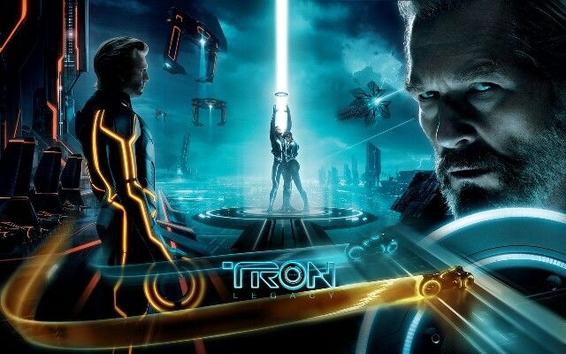
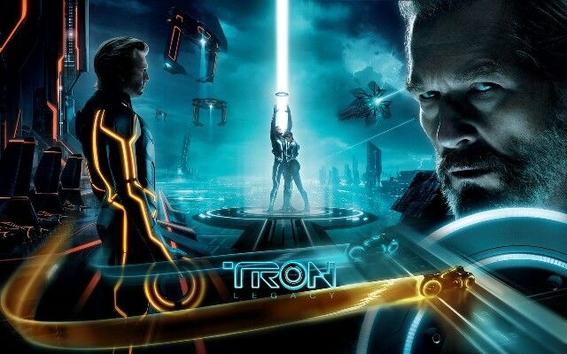

No podía faltar mi pasión por los coches, empezamos con Rápidos y Furiosos. Yo creo que a partir de esas películas nació mi amor por los coches y por tener un negocio de mecánica. Yo soy mucho de ver películas de acción y John Wick es una de mis favoritas, será que sus tres películas me las vi y las tres son completamente cine puro. Un clásico también, TRON, de las primeras películas que vi y me emocionaba cada que peleaban y sacaban sus motos de luz, y también es buena película para escuchar muchos términos de programación. Y ya por último, otro clásico, Volver al Futuro es de esas películas que puedo repetir y no me aburro, las 3 películas entretienen mucho.